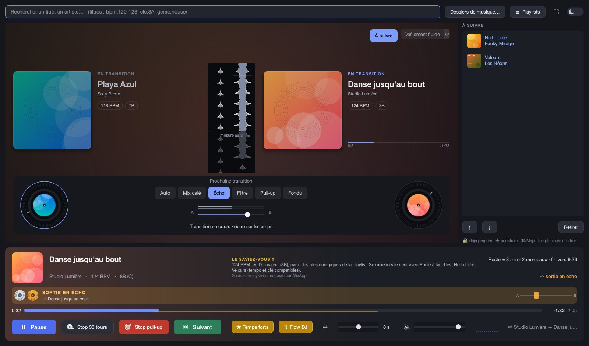
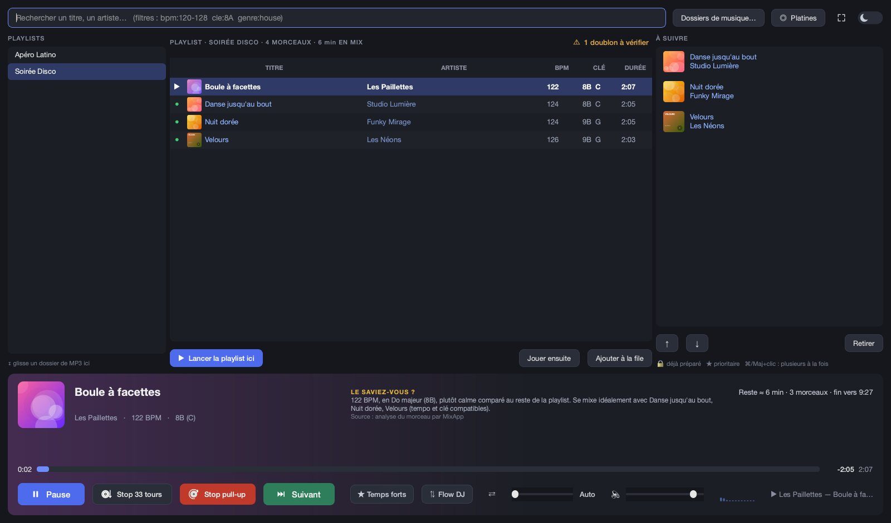
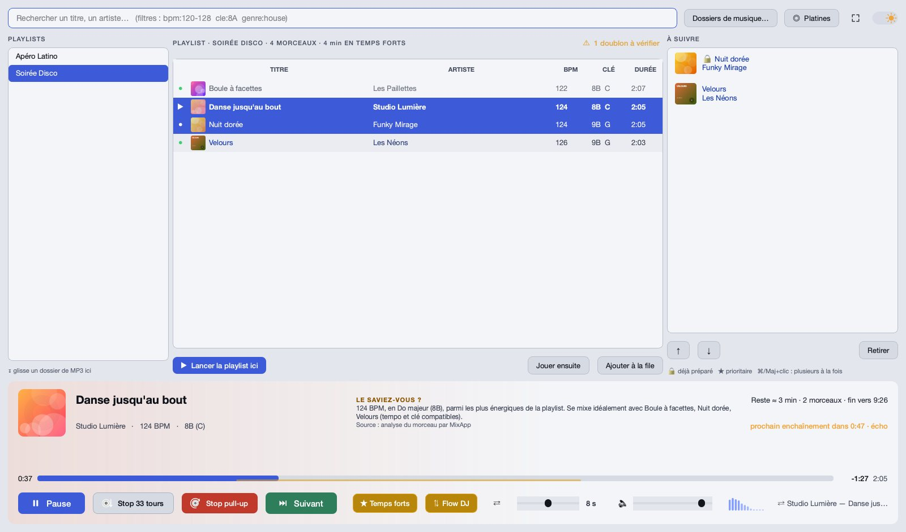

MixApp enchaîne tes MP3 tout seul, calés sur le tempo et la tonalité. Tu lances la playlist, tu profites de la soirée.
Gratuit · Mac et Windows · fonctionne sans internet

Deux morceaux, une transition : MixApp cale les tempos, échange les basses et passe au suivant sans blanc.
Pensé pour une fête entre amis : rien à régler, mais la main reste à toi quand tu veux.
Mix calé, écho, filtre, fondu : l'appli choisit la meilleure selon les morceaux, de 2 à 15 secondes.
Deux platines qui tournent, les formes d'onde et un crossfader : on voit le mix se faire.
Impose l'écho, le filtre ou le pull-up pour le prochain enchaînement, puis retour en Auto.
Un invité veut un titre ? Recherche, « Jouer ensuite », et il passe juste après.
L'ordre idéal pour que l'énergie monte, et seulement les meilleurs moments des morceaux.
Une anecdote sur le morceau ou l'artiste, toujours sourcée, jamais inventée.


Choisis le fichier de ton ordinateur. Sur Mac : menu Pomme › « À propos de ce Mac » indique la puce et la version de macOS.
Ces alertes sont normales : MixApp est une appli personnelle, pas publiée sur l'App Store ni le Microsoft Store.
L'installation et toutes les fonctions en 3 minutes, pas à pas.
Installation, premier lancement, playlists, platines, pads.
Le même parcours, côté PC.
Oui. Pas de compte, pas de publicité, pas d'abonnement.
Non pour mixer. Internet sert seulement à trouver les pochettes et les anecdotes « Le saviez-vous ? ».
Non : MixApp lit tes propres fichiers MP3, rangés dans des dossiers sur ton ordinateur.
Jamais. MixApp lit ta musique sans la toucher ; les doublons sont seulement masqués dans l'appli.
Une soirée réussie, un bug, une idée de fonction ? Raconte-moi ton expérience.
animcontact@gmail.com